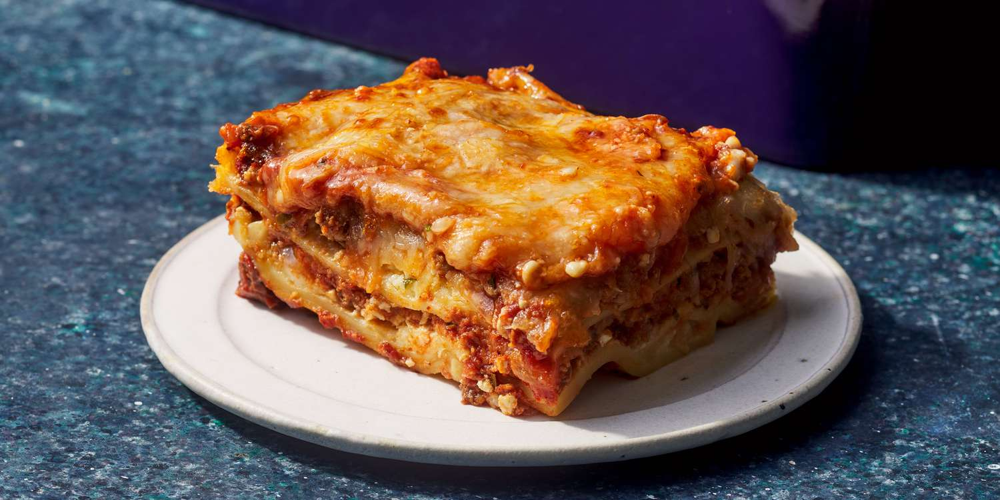

Lasagna

Ingredients
- Lasagna noodles
- Ground beef
- Tomato sauce
- Ricotta cheese
- Mozzarella cheese
- Parmesan cheese
- Garlic
- Onion
- Salt and pepper
Steps
- Preheat the oven to 375°F (190°C).
- Cook the lasagna noodles according to the package instructions.
-
In a skillet, cook the ground beef with chopped onion and garlic until
browned.
- Add tomato sauce to the skillet and simmer for 10 minutes.
-
In a baking dish, layer the noodles, meat sauce, ricotta, mozzarella,
and Parmesan cheese.
-
Repeat the layers until all ingredients are used, finishing with a layer
of cheese on top.
-
Bake in the oven for 25-30 minutes or until the cheese is bubbly and
golden.
- Let it cool for 10 minutes before serving.